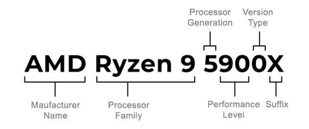

AMD
Společnost AMD je hlavním konkurentem firme Intel a Nvidia. Vyrábí jak CPU, tak GPU. Sídlo má v kalifornii. Celý název firmy je Advanced Micro Devices.
3.1 Značení Procesorů
Značení se moc neliší od značení společnosti Intel. Jediné změny jsou ve speciálních znacích na konci názvu a přidání znaku po generaci označující výkon.
- G integrovaná grafická karta
- X extrémní výkon, velká spotřeba
- U ultra nízká spotřeba
- H vysoký výkon
- T turbo (Vyšší frekvence)
3.2 Ryzen 9 7950X
Nejvýkonnější procesor od AMD, s 16 jádry se umístí hned za jeho Intel protivníkem. Cenově je o 1000kč levnější než aktuální i9, zato je ale i9 o 14% rychlejší a má o 8 jader více.
3.3 Ryzen 5 5500
Nejlepší procesor v nabídce, co se týče poměru cena/výkon je ideální skoro pro každého. I když má jen 6 jader a 12 vláken, postačí na většinu programů běžně spustitelných na PC. Pokud ale bude potře procesor vylepšit, bude to velmi náročné, neboť Ryzen 5 5500 funguje na soketu (tvaru procesoru) am4, od kterého se postupně odchází.